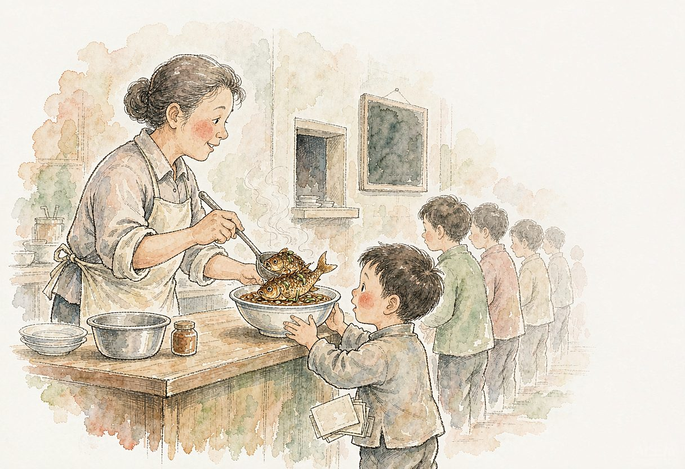

我对食堂有好感。最初，始于儿时的一次体验。
那年头，正值三年自然灾害时期，家家户户的餐桌上都是清汤寡水的。每次饭后，总好像意犹未尽、没有吃饱。
某日中午，母亲拿出几张饭菜票，让我到开张不久的离家很近的一个“居民食堂”去尝试一下（当时，街道试办过一批居民食堂）。这是生平第一次上食堂，我兴冲冲的去了。打菜的正是一位我认识的邻家阿姨，笑容可掬。出乎意料的是，菜单中居然有葱烤鲫鱼，这可是那个年代难得的美味佳肴。鲫鱼虽然很小，是“迷你型”的。但是它鲜美的滋味、阿姨的笑容、还有“食堂”这个概念，却在幼小的脑海里扎下了根，这是一个很好的第一印象哦！
到了中学，学业繁忙。中午的就餐问题显得尤为重要。如果回家吃午饭，路远、人累，还浪费了宝贵的时间。学校提供蒸饭服务，但是蒸饭每天要准备米、菜，已经装满书、簿的书包里又要添一个大饭盒，觉得麻烦了一点。这样最佳选择就是在学校食堂搭伙。只可惜学校食堂也人满为患，我是等了一年，才算办妥了搭伙手续。
此后，我每到一个单位，特别关注的就是它的食堂。每个食堂都会给我留下一些难忘的记忆。
农场食堂，最好的菜肴非红烧肉莫属。走在收工的路上，就能闻到食堂飘出的肉香。一角三分一份的红烧肉，大致有比麻将牌小一点的五、六块小肉，带着鲜美的肉汤汁，盖在亮晶晶的米饭上，捧起饭碗，一天的疲惫都烟消云散了。
上大学时，文革刚刚结束，物质仍然匮乏。上师大的食堂，居然有夜宵，有茶叶蛋可卖。这让我喜出望外。紧张的夜自修期间，我总要挤出时间，赶到食堂去一次。稍晚一步，茶叶蛋就要售罄，这是常有的事情。四年后，我的毕业鉴定中，有“学业成绩优秀”一句。我总认为，与在校期间常吃茶叶蛋有关！
后来到教育学院工作。它的食堂在三号楼底楼。让我印象深刻的是：在二楼一度办起了“雅座”，有为数不多的几种“小锅菜”供选择。每当一客“水晶虾仁炒蛋”或“菠萝咕咾肉”搭在一台简易的升降机上，缓缓地从底楼升上来。我的心里也随之涌起一阵感慨：到底是教育学院，比基层学校的食堂强呵！
退休后，与食堂就渐渐疏远了。配合老伴，操弄三餐，成了每天的必修课。不善厨艺的我，有时，难免会想起食堂的种种好处来。
没想到，七月初，就在家门口的“小食堂”开始运营了。这是街道落实《杨浦区老年人助餐服务水平提升行动方案》的成果，专门为60岁以上的老人开办的。
我和老伴得到消息，赶紧前往体验尝鲜。小食堂的用餐场地装修一新，前来用餐的居民，满面春风，络绎不绝。四周氤氲着兴奋、喜庆的气息。
食堂内的两个洁白的洗手池首先吸引了我们的眼球，还有洗手液、擦手纸和手部消毒机呢，这些设施是以前所有就餐过的食堂都无法比拟的。
一群志愿者在忙前忙后，引导老人们排队办卡、洗手、取餐、就坐，努力为老人们营造出舒适的就餐环境。我和老伴洗了手、拿了餐盘，前往点菜。
与传统按份收费方式不同，小食堂采取按照打菜量计算餐费的方法，在每种菜品前都设置有智能称重设备。这可是第一回见识到，算得上“高科技”呢！这样一来，老人们可以自由选择爱吃的菜，吃多少买多少，既满足多元选择的需求，又能做到“光盘”不浪费。
晒晒小食堂的菜单:红烧肉甘甜软烂；卤鸡腿咸香适中；虾仁炖豆腐鲜香清淡；芥菜双菇汤羹既鲜浓，又解腻……，小食堂充分考虑了老年人牙口不好、饮食偏淡的特点，力求荤素均衡、整体清淡、软糯易嚼。
小食堂每天都推出14道家常美食，站在宽大的电子屏菜单前，逐一探寻今天推出了哪些菜品，心情有一点兴奋、也有一点期盼……这感觉，与儿时，走进食堂查看菜单时的感觉还真有几分相像呢！
那天去用餐，在食堂前的小院里看见一辆小轿车，车身上“STV 新闻坊” 几个字眼特别醒目。老人们高兴的对记者说：“小食堂是政府为老服务办的实事，为我们解决了吃饭难题啊！”
最后要介绍一下，小食堂有一个很好听的名字：“长馨睦邻小厨”。
（本文刊登于2020.10.13《杨浦时报》）